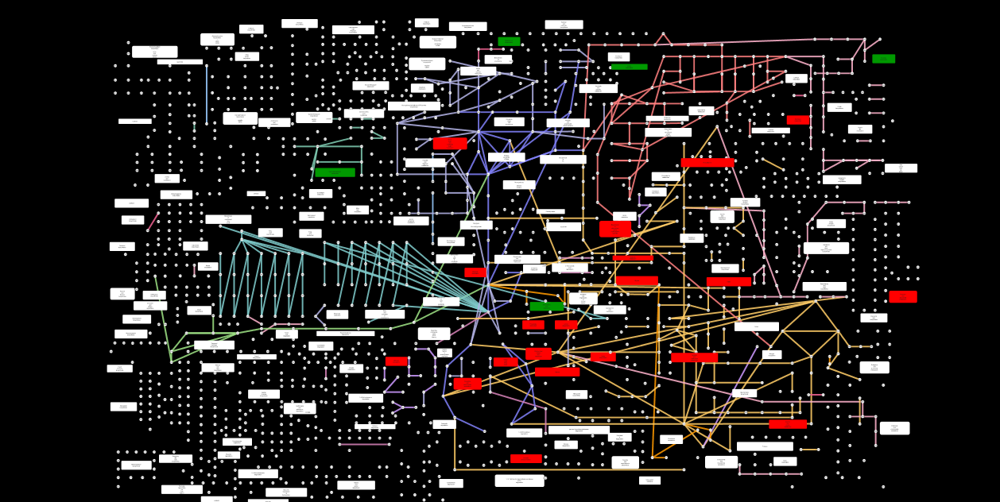
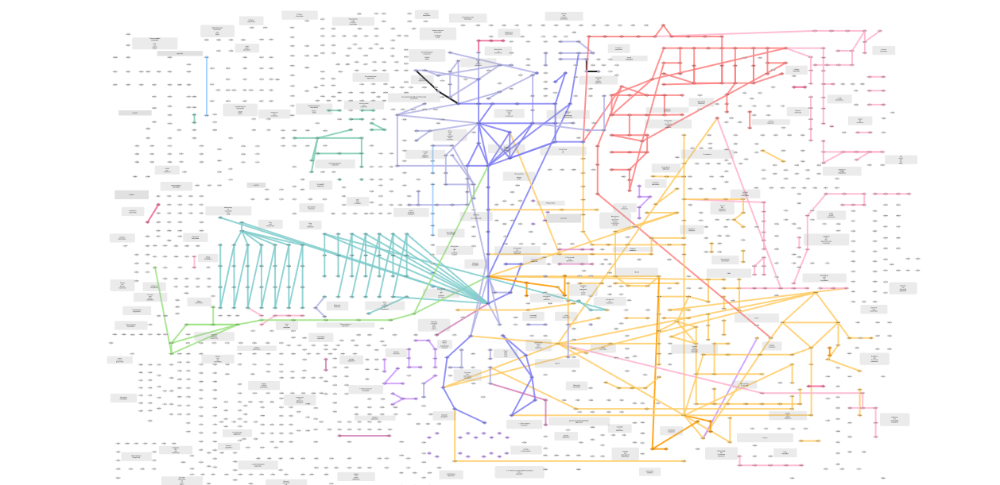
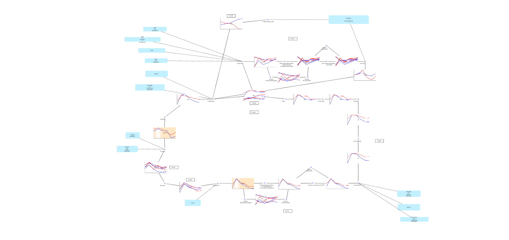

CytoscapeへのKEGGデータベース情報の取り込みと実験情報のマッピング
提供：TogoWiki
このチュートリアルでは
- Cytoscapeがどの様なソフトか
- 最近リリースしたKEGG Pathwayのインポート機能
がどのようなものか皆様に知っていただくためにKEGG Pathwayのimportと
- 簡単なユーザデータのマッピング
- Google chart APIを用いたマッピング
を行います。
KEGG Pathwayはオミクスデータ解釈によいマッピング対象であるだけではなく、Cytoscapeの使用方法を知る上でもよい題材であると思います。
もしよろしければ皆様のお手元のPCでも同じように操作し、体感して頂きたいと思っています。
マッピングの内容については
- KEGG Atlas
- Pathway Projector
- Kappa View
のような先達のPathwayマッピングソフトをイメージして頂ければと思います。
上記の先達ソフトウェアではなくCytoscape上でこのようなマッピングを行うことのメリットとして
- ローカルクライアントソフトであり、見栄えの詳細なカスタマイズが可能
- 独自のアノテーションが自由に付けられる
- Cytoscapeがデファクトスタンダードのプラットフォームであり、他のプラグインによって得られるデータ、機能が充実していること、そしてそれらとの統合がしやすい
ことがあります。
目次 |
事前準備のお願い
Cytoscape2.8のbeta版を各自ご持参頂くPCに予めインストールしてください。
Cytoscape 2.8 beta のダウンロード先
http://chianti.ucsd.edu/Cyto-2_8-beta/
プラグインのインストール方法
KEGG Pathwayをimportする機能はプラグインを追加することで可能になります。
下記urlからkgmlreader-0.07.jarをダウンロードしCytoscapeをインストールしたディレクトリ下にあるpluginディレクトリにコピーしてください。
http://code.google.com/p/kgmlreader/downloads/list
KGML(KEGG PathwayのXML表現)のインポート
KEGG PathwayのCytoscapeへの取り込みはKGMLとよばれるKEGG Pathwayのxml表現をimportすることにより実現しています。
KGMLのimport方法は
- ローカルのKGMLファイルをCytoscapeで指定、読み込む
- ブラウザに表示したPathway画像のdrag and drop
の2通り用意しています。
ローカルのKGMLファイルを読み込む場合複数のファイルを選択し、バッチインポートすることも可能です。
TogoWSを用いたデータの拡充について
デフォルト設定ではTogoWSを用いてデータの拡充を行っています。(KGML中には基本的なエントリIDなどの情報しか含まれていないため)
もしこの機能が必要ない場合メニューバーのPlugins -> KGML Reader -> Options -> Automatic Annotation Import from TogoWS
と辿りCheckをoffにしてください。
KEGG Global Metabolism Mapをベースにした簡単なユーザ情報のmapping
KEGG Global Metabolism Mapへパスウェイに割り当てられる遺伝子群のwildtype-mutant発現差異検定結果を用いたマッピングを行います。
最終的に下記のような見栄えの図を作成します。

{kind=link}
Global Metabolism Mapのインポート
メニューバーのFile -> Import -> Network(Multiple File Types)...からbsu01100.xmlを指定してください。
ノードラベルが表示されていない場合メニューバーのView -> Show Graphic Detailsをクリックしてください。
下記のようなネットワークが表示されます。

.png.html){kind=link}
ノードアトリビュートの確認
ノード、エッジ、ネットワークに対するメタデータはCytoscapeではそれぞれアトリビュートと呼ばれ表形式で保持しています。
このデータの確認は以下の手続きで行います。
- Ctrl+aですべてのノードを選択
- Data Panelからすべてのチェックをつけるアイコンをクリック
発現差異検定ノードアトリビュートのインポート
まず下記urlからbsu01100.xml、globalmetabolism.attrをダウンロードしてください。
このファイルの内容はGlobal Metabolism Map中のPathwayに対応する遺伝子発現をwildtypeとmutant間でpaired t-testした結果と考えてください。
+1をmutantで高発現、-1をwild-typeで高発現していると考え、それが時系列で6点測定したものを各Pathwayに対応させタブ区切りで表しています。
http://code.google.com/p/kgmlreader/downloads/list
メニューバーのFile -> Import -> Attribute from Table (Text/MS Excel)... からglobalmetabolism.attrを指定してください
Import Annotation Fileというウインドウが現れます。
Show Mapping Options、Show Text File Import Optionsオプションを有効化し、下記の設定に注意してimportしてください。
- ヘッダがあるかどうか
- 手持ちのアトリビュートファイルとすでにCytoscape中に取り込まれているアトリビュートをつなぐキーとなるアトリビュートを設定する
発現差異検定に対応するVisualStyleの編集
ノードの色、透過度設定の一旦破棄
KGMLReaderではKEGGにおけるGlobal Metabolism Mapの見栄えに似せたビジュアルがmapされています。
(KGMLReader中でこの色設定をハードコードしています)
前述のglobalmetabolism.attrはpathway(ノード)に対応するものであるため、ここではまずKGMLReaderが設定している
ノードに対する見栄えの設定を破棄してから独自の設定を行います。
色の設定廃棄手続きは下記のようになります。
- Control PanelからVizMapperタブを選択
- Visual Mapping Browserパネル中のNode Colorを右クリック -> Delete mapping をクリック
透過度の設定廃棄手続きは下記のようになります。
- Control PanelからVizMapperタブを選択
- Visual Mapping Browserパネル中のNode Opacityを右クリック -> Delete mapping をクリック
- Defaultsパネルをクリック
- Nodeタブをクリック
- NODE_OPACITYをクリック後255と入力し設定
VizMapperはデフォルトの設定とアトリビュートの内容に対応するコンポーネント別に設定する2段階の設定を反映しています。
Defaultsパネルのクリックからの設定はアトリビュートの内容に関係なく設定されるものでVisualMappingBrowserの設定はData Panelパネル中のアトリビュートに応じて設定されます。
ノードの透過度設定は2段階共に設定されているため、ここでは2つの設定を共に一旦破棄しています。
背景の変更
VisualStyleの設定変更方法を知っていただくために背景色の変更をしてみます。 手順は以下のようになります。
- Defaultsパネルをクリック
- Globalタブをクリック
- Background Colorをクリックし、黒に設定
発現差異検定結果に対応するPathwayノードの色づけ
Global Metabolism Map中のPathwayノードに対応する発現差異検定アトリビュートの色づけの設定手続きは下記のようになります
- Visual Mapping BrowserパネルからNode Colorをダブルクリックします。
- Node colorセル左のPlease select a value!セルでアトリビュートtime1を選択します。
- Mapping TypeにDiscrete Mapperを選択し、-1に対応する色に緑を,+1に対応する色に赤を設定します。
以上の手続きにより前述の黒背景のGlobal Metabolism Mapのカスタムマッピングネットワークが得られます。
KEGG Pathway (TCA Cycle) をベースにしたGoogle Chart APIを用いたユーザ情報のmapping
メニューバーのFile -> Import -> Attribute from Table (Text/MS Excel)... からsampleTCA.attrを指定してください。 このファイルにはTCA cycleのenzymeノードに対応するwildtypeとmutantの遺伝子発現をGoogle Chart APIを用いた線グラフのURLが書かれています。 続いて、以下の手続きでGoogle Chart APIのグラフマッピングを反映させます。
- VizMapperタブをクリック
- Node Custom Graphics 1の追加
- Node Custom Graphics 1に対応させるノードアトリビュートとしてGoogle Chart APIのURLを指定
- Mapping TypeにPassthrough Mappingを指定
デフォルト設定ではCustom Node Graphicsの大きさをノードのラベルの範囲内に収める設定が有効になっています。
これを以下の手続きで無効にします。
- VizMapperタブをクリック
- Defaults設定をクリック
- Dependenciesタブをクリック
- Synchronize Custom Graphics Size to Node Sizeのチェックを外す
sampleTCA.attrでは意図して大きめにGoogle Chart APIのグラフを作っています。
こういった際には、下記の手続きでKEGG Pathwayのパスウェイのスケールをグラフに合わせることができます。
- メニューバーからLayout->Scaleと辿りクリック
- Control Panel下にTool Panelというパネルが出現するので、そのScaleタブ中のScaleを1から2に変更する
以上で下記のような見栄えのTCA cycleができあがります。 
_(bsu).png.html){kind=link}